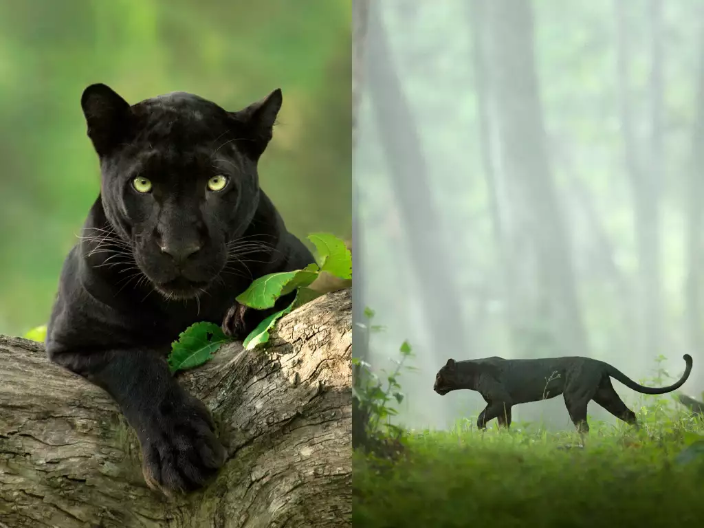

BLACK PANTHER
A black panther is the melanistic colour variant of the leopard (Panthera pardus) and the jaguar (Panthera onca). Black panthers of both species have excess black pigments, but their typical rosettes are also present. They have been documented mostly in tropical forests, with black leopards in Africa and Asia, and black jaguars in South America. Melanism is caused by a recessive allele in the leopard, and by a dominant allele in the jaguar.
